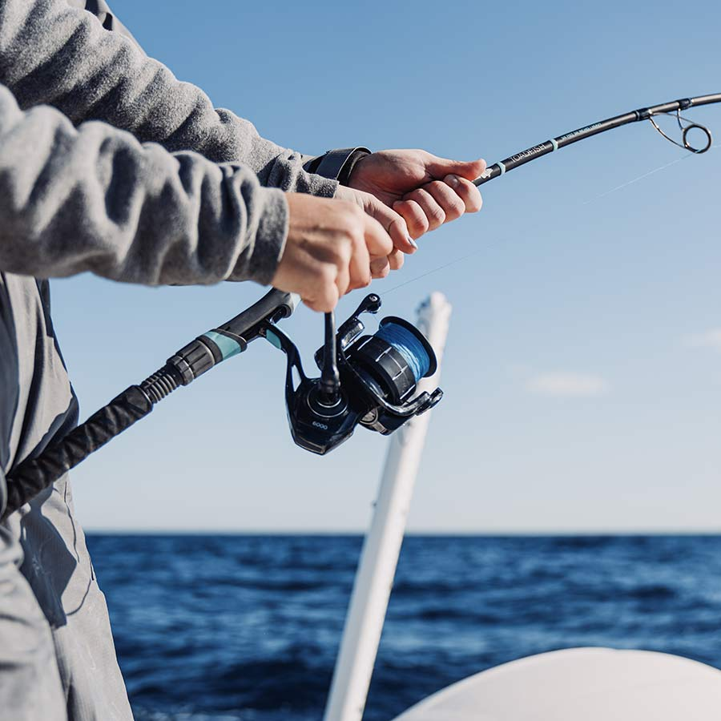
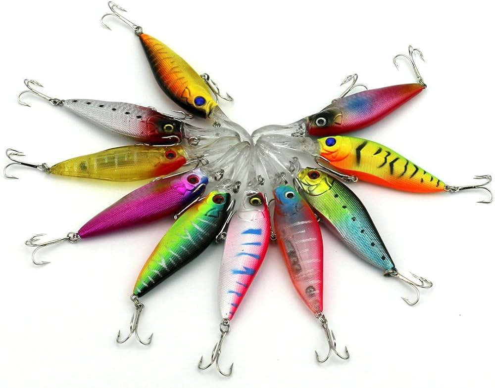
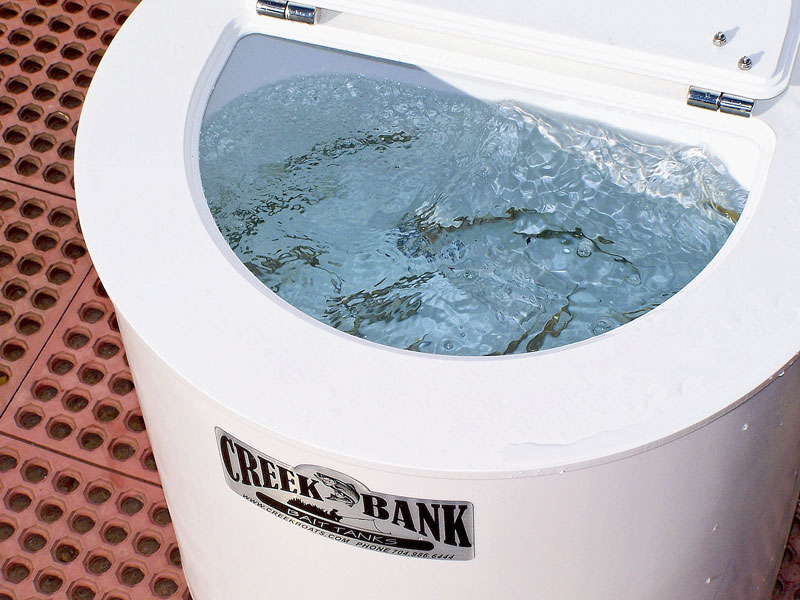
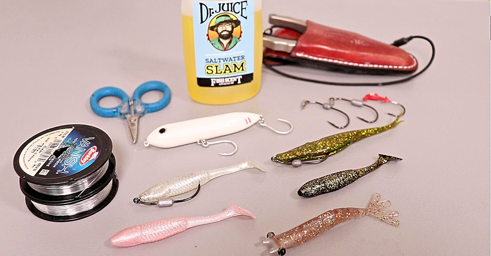

Menu
Rods & Reels

-
Central Coast Spinning Rod
7-foot medium-heavy rod designed for halibut, striped bass, and rockfish. Built for long casts and strong hook sets in surf and bay conditions.
$89.99
-
Offshore Jigging Rod
Heavy-duty rod ideal for targeting lingcod and deeper-water rockfish. Reinforced blank built for vertical jigging offshore.
$149.99
-
Saltwater Spinning Reel
corrosion-resistant reel with smooth drag system and sealed bearings for saltwater durability.
$119.99
-
Saltwater Baitcaster Combo
Baitcaster rod and reel combo. Comes with upgraded bearings and seals to keep out contaminates.
$89.99
-
Micro Rod
High quality materials packed into a small, lightweight package. This setup may be small but it is still extrmeely effective at catching baitfish or going after creek trout.
$64.99
Tackle & Line

-
Braided Fishing Line (300 yd)
High-strength braided line with low stretch for improved sensitivity and control in deeper water. Comes in a variety of strengths.
$24.99
-
Monofillament Leader (150 yd)
Clear mono leader. Strong and invisiable to help with better lure/bait presentation.
$20.99
-
Heavy Metal Jig
Vertical jig designed for rockfish and lingcod in 150–300 ft depths.
$14.99
-
Terminal Tackle Starter Kit
Includes assorted hooks, swivels, sinkers, leaders, and rigs suited for Central Coast saltwater fishing.
$39.99
-
Soft Plastic Swimbait Pack
Realistic paddle-tail swimbaits ideal for halibut and striped bass near kelp beds and sandy flats.
$9.99
-
Plastic Sand Worms
Red and green plastic sandworms. Soaked in irresistable pherramone scent making them a perfect treat for surf-perch and striper.
$8.99
Live & Fresh Bait

-
Live Anchovies (per scoop)
Fresh, locally sourced live bait delivered daily. Ideal for halibut and striped bass.
$10.00
-
Live Shrimp (per dozen)
Premium live shrimp for pier and bay fishing.
$8.50
-
Frozen Squid
Reliable frozen bait option for surf and offshore fishing.
$6.99
-
Frozen Sardines
Reliable frozen bait option for surf and offshore fishing.
$5.99
-
Live Sand Crabs
Harvested daily from a rotating selection of locations.
$5.99
Essentials

-
Insulated Bait Cooler
Keeps bait fresh and fish cold during long days on the water.
$34.99
-
5-Gallon Bait Bucket with Aerator
Portable aerated bucket to keep live bait active and healthy.
$29.99
-
Rod Holder
Metal rod holder perfect for docks and piers. Lets you set the rod down without fear of loosing it to a bigger fish.
$11.99
-
PVC Sand Spike Holder
lightweight option to keep rods clean and stable in the sand for surf fishing.
$15.99
-
Aluminium San Spike Holder
More durable sand spike rod holder for larger fish.
$25.99
-
Sunscreen
Protect your skin and your future with our SPF 120 sunscreen
$8.99